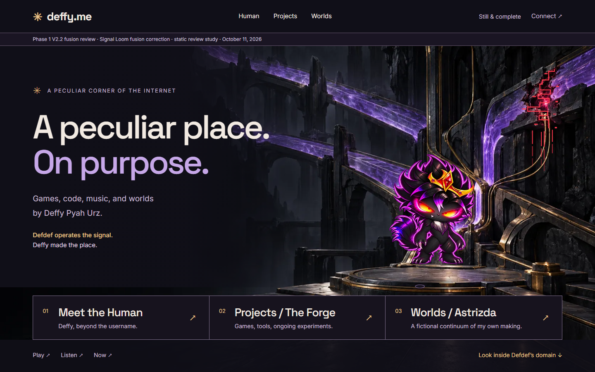
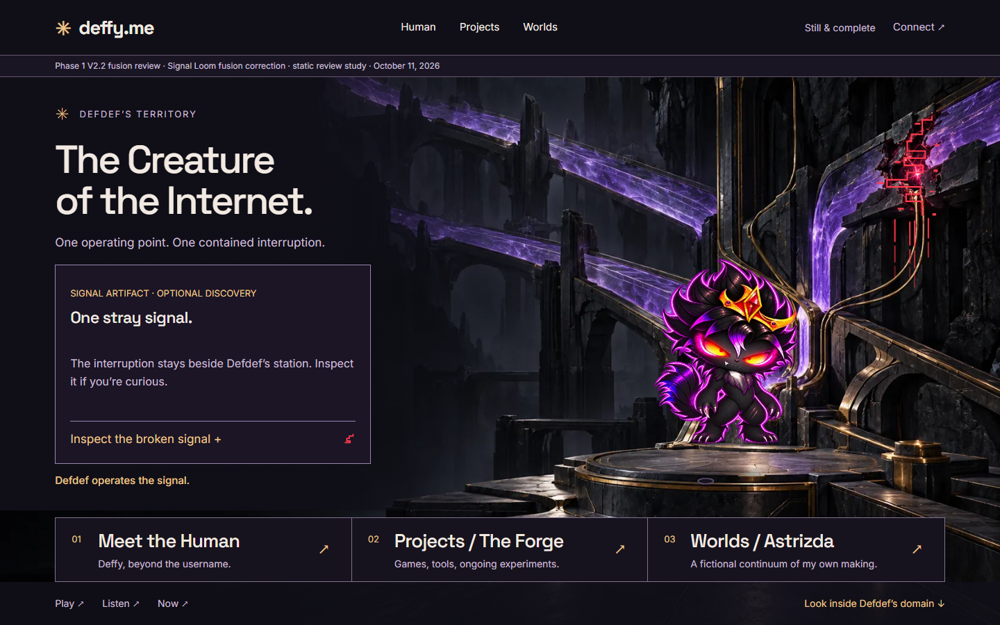
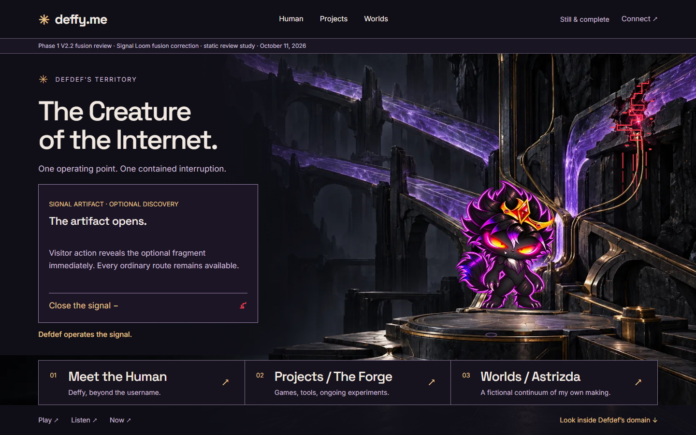
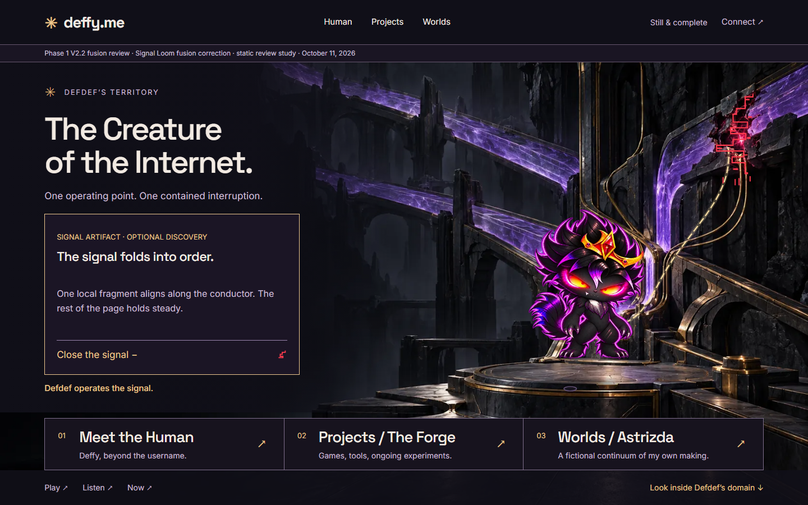
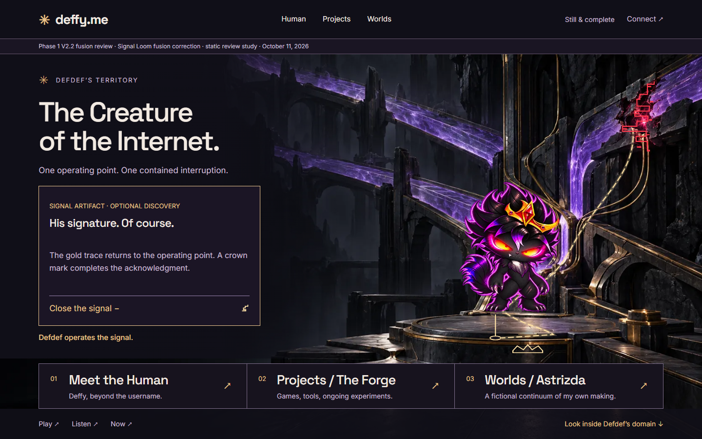
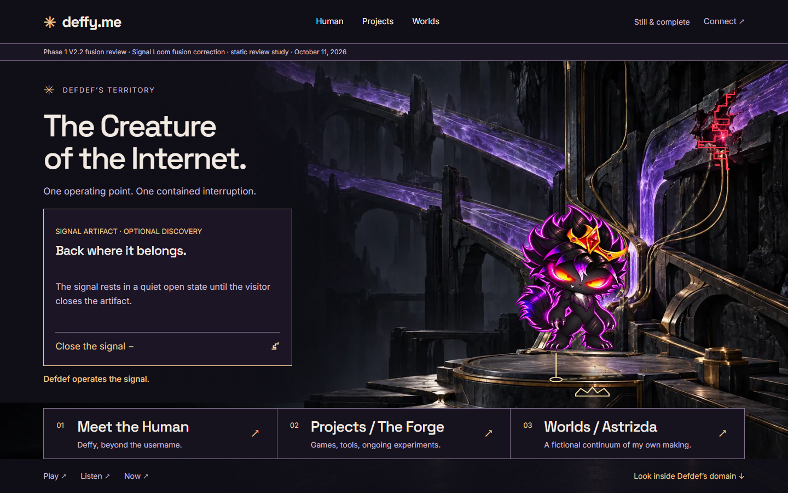
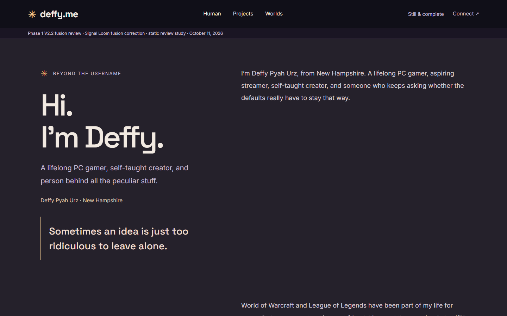

Arrival
Anomaly and dim junction present; no trace.
1920×10801440×900Responsive platePhase 1 V2.2 · fusion correction
A static review study testing whether Signal Loom can read as digital and show Defdef’s agency through localized overlays only — no environment or character art changes. Not a prototype, not an approved design.

Anomaly and dim junction present; no trace.
1920×10801440×900Responsive plate
Displaced anomaly, dim claw junction.
1920×10801440×900Responsive plate
Artifact opens; anomaly still displaced.
1920×10801440×900Responsive plate
Torn fragments snap onto the stepped crack; half the gold trace drawn.
1920×10801440×900Responsive plate
Aligned anomaly, full trace, lit claw junction and crown stamp.
1920×10801440×900Responsive plate
Trace rests at reduced opacity; junction and crown stay lit.
1920×10801440×900Responsive plate
Quiet desktop layout kept; mobile order corrected; approved worlds paragraph added.
1920×10801440×900Responsive plate